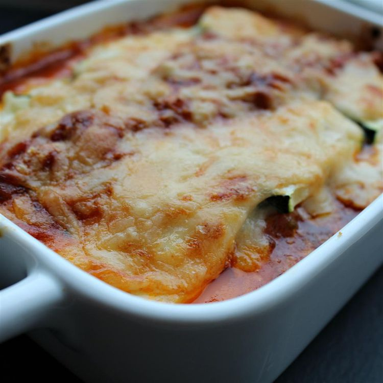

Lasagna Bolognese

A traditionally made lasagna bolognese.
Ingredients
- 1 tablespoon olive oil
- 1 carrot
- 1 onion
- 2 stalks celery
- Tomato paste
- 400g ground beef
- 1 glass red wine
- ½ liter beef stock
- Oregano
- Basil
- 3½ tablespoon flour
- 50g butter
- 7dl whole milk
- Nutmeg
- 100g parmesan
- 200g shredded mozzarella
- lasagna sheets
Directions
Meat sauce
- Finely cut the vegetables
- Saute the vegetables
- Saute the meat
- Roast the tomato paste
- Add the liquids
- Add the meat and vegetables
- Simmer for as long as possible
- Add species and season with salt and pepper
Cheese sauce
- Melt the butter in a pot
- Add flour and roast for 5 minutes
- Add milk little by little until the slightly thinner than desired
- Add the cheese and boil for additional 5 minutes
- Season with nutmeg, salt and pepper
Assembling the lasagna
- Put a thin layer of meat sauce in the bottom of the dish
- Continue with 3 layers for sheets, meat sauce, and cheese sauce ending with a thicker layer of cheese sauce
- Bake in the oven at 200 degrees celsius until done (approx. 30 minutes)
- Rest the lasagna for 10 minutes and enjoy